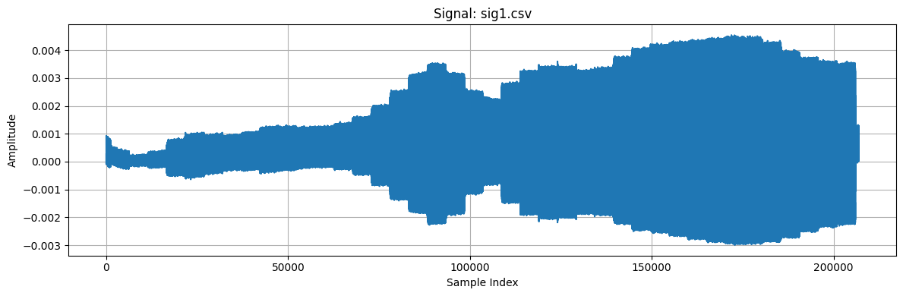
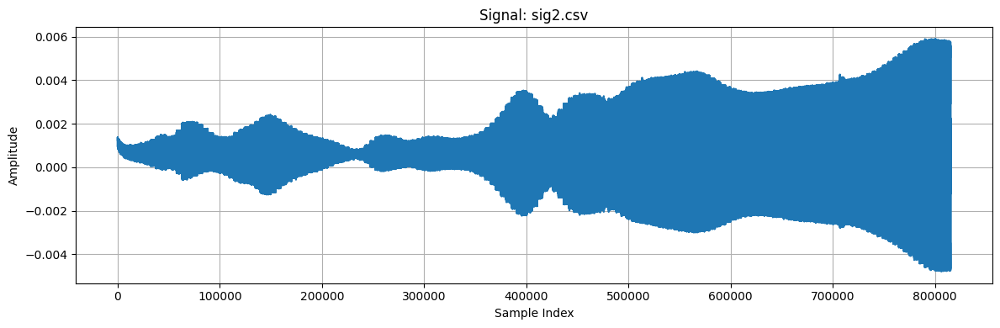
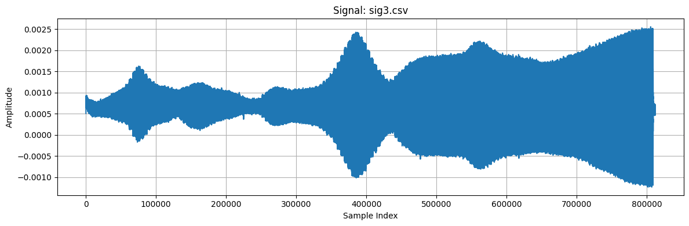
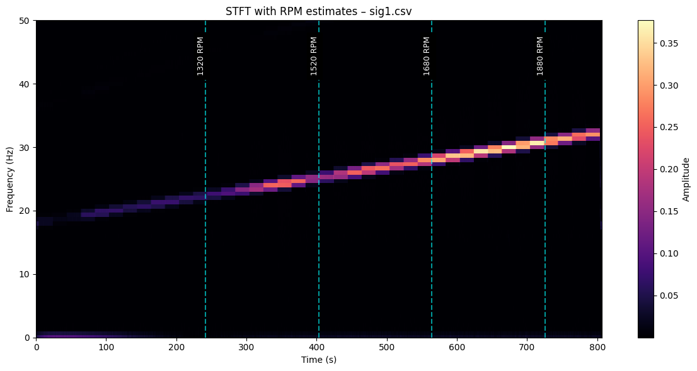
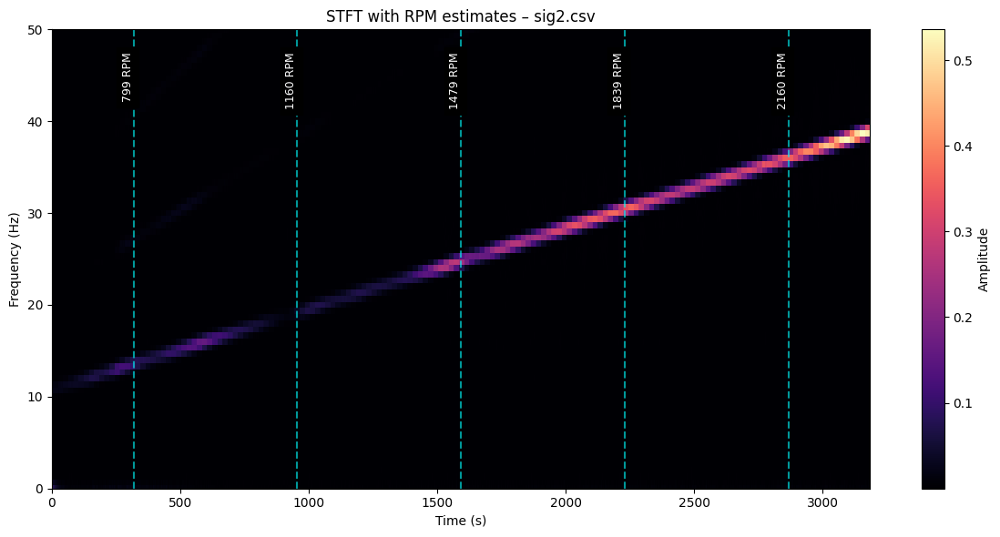
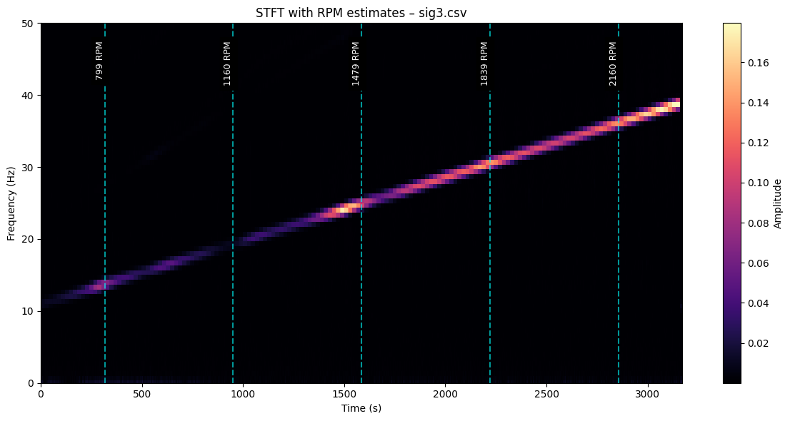

V tej nalogi obravnavamo časovno-frekvenčno analizo vibracijskih signalov elektromotorja z uporabo kratkočasovne Fourierove transformacije (STFT), ki smo jo implementirali sami. Cilj analize je oceniti število vrtljajev na minuto (RPM) za vsak signal, pri čemer se upošteva, da se RPM spreminja skozi čas ter da se med posameznimi signali razlikuje.
Za vsak signal izvedemo STFT z možnostjo izbire dolžine okna, stopnje prekrivanja in uporabe Hammingovega okna. Na osnovi spektrograma določimo dominantne frekvence v izbranih časovnih točkah in jih pretvorimo v RPM. Rezultati so prikazani z ustrezno označenimi spektrogrami, kjer so ocene RPM dodatno vizualno označene.
import os
import pandas as pd
import numpy as np
import matplotlib.pyplot as plt
signal_folder = 'rpm_vib'
signal_files = [f for f in os.listdir(signal_folder) if f.endswith('.csv')]
signals = {}
for file in signal_files:
file_path = os.path.join(signal_folder, file)
data = pd.read_csv(file_path, header=None)
signal = data.values.flatten()
signals[file] = signal
def stft_custom(signal, sample_rate, window_ms=40, overlap_pct=0.5, use_hamming=False):
window_size = int(window_ms * sample_rate / 1000)
hop_size = int(window_size * (1 - overlap_pct))
# Zero-padding to ensure full frames
total_frames = int(np.ceil((len(signal) - window_size) / hop_size)) + 1
pad_length = (total_frames - 1) * hop_size + window_size
padded_signal = np.pad(signal, (0, pad_length - len(signal)))
# Optional window function
window = np.hamming(window_size) if use_hamming else np.ones(window_size)
# STFT computation
spectrogram = []
for start in range(0, len(padded_signal) - window_size + 1, hop_size):
frame = padded_signal[start:start + window_size] * window
spectrum = np.fft.rfft(frame)
magnitude = np.abs(spectrum)
spectrogram.append(magnitude)
return np.array(spectrogram).Tprint(f"Loaded {len(signals)} signals.")
# Step 4: Visualize first 3 signals in separate charts
for i, (filename, signal) in enumerate(signals.items()):
if i >= 3:
break
plt.figure(figsize=(12, 4))
plt.plot(signal)
plt.title(f"Signal: {filename}")
plt.xlabel("Sample Index")
plt.ylabel("Amplitude")
plt.grid(True)
plt.tight_layout()
plt.show()Loaded 3 signals.



def estimate_rpm_from_stft(signal, sr, key, window_ms=1500, overlap_pct=0.75, freq_limit=50, time_points=5):
signal = signal - np.mean(signal)
spec = stft_custom(signal, sr, window_ms, overlap_pct, use_hamming=True)
spec_mag = np.abs(spec)
n_frames = spec_mag.shape[1]
frame_hop = int((1 - overlap_pct) * window_ms * sr / 1000)
frame_times = np.arange(n_frames) * frame_hop / sr
freqs = np.fft.rfftfreq(int(window_ms * sr / 1000), d=1/sr)
freq_indices = freqs <= freq_limit
freqs = freqs[freq_indices]
spec_mag = spec_mag[freq_indices, :]
margin = int(spec_mag.shape[1] * 0.1)
selected_frames = np.linspace(margin, spec_mag.shape[1] - margin - 1, time_points, dtype=int)
estimated_rpms = []
for frame_idx in selected_frames:
frame_magnitude = spec_mag[:, frame_idx]
if np.max(frame_magnitude) < 1e-3:
continue
dominant_freq = freqs[np.argmax(frame_magnitude)]
if dominant_freq < 1e-3:
continue
rpm = dominant_freq * 60
estimated_rpms.append((frame_times[frame_idx], rpm))
plt.figure(figsize=(12, 6))
plt.pcolormesh(frame_times, freqs, spec_mag, shading='auto', cmap='magma')
plt.colorbar(label="Amplitude")
plt.title(f"STFT with RPM estimates – {key}")
plt.xlabel("Time (s)")
plt.ylabel("Frequency (Hz)")
plt.ylim(0, freq_limit)
for t, rpm in estimated_rpms:
plt.axvline(x=t, color='cyan', linestyle='--', alpha=0.6)
plt.text(t, freq_limit * 0.95, f"{int(rpm)} RPM", rotation=90,
color='white', ha='right', va='top', fontsize=9, backgroundcolor='black')
plt.tight_layout()
plt.show()
return estimated_rpmssr = 256
for i, (filename, signal) in enumerate(signals.items()):
if i >= 3:
break
print(f"\nEstimating RPM for signal: {filename}")
rpms = estimate_rpm_from_stft(signal, sr, filename)
for t, rpm in rpms:
print(f" Time: {t:.2f} s → Estimated RPM: {rpm:.1f}")
Estimating RPM for signal: sig1.csv

Time: 241.88 s → Estimated RPM: 1320.0
Time: 403.12 s → Estimated RPM: 1520.0
Time: 564.38 s → Estimated RPM: 1680.0
Time: 726.00 s → Estimated RPM: 1880.0
Estimating RPM for signal: sig2.csv

Time: 318.38 s → Estimated RPM: 800.0
Time: 955.12 s → Estimated RPM: 1160.0
Time: 1591.88 s → Estimated RPM: 1480.0
Time: 2228.62 s → Estimated RPM: 1840.0
Time: 2865.75 s → Estimated RPM: 2160.0
Estimating RPM for signal: sig3.csv

Time: 316.88 s → Estimated RPM: 800.0
Time: 951.38 s → Estimated RPM: 1160.0
Time: 1585.88 s → Estimated RPM: 1480.0
Time: 2220.38 s → Estimated RPM: 1840.0
Time: 2854.88 s → Estimated RPM: 2160.0
Analiza z uporabo lastne STFT implementacije je omogočila uspešno oceno števila vrtljajev elektromotorja na minuto (RPM) iz vibracijskih signalov. Spektrogrami jasno prikazujejo spreminjanje frekvenčne vsebine skozi čas, dominantne frekvence pa so bile zanesljiv pokazatelj trenutnega RPM.
Ugotovili smo, da izbira parametrov (dolžina okna, prekrivanje) pomembno vpliva na natančnost ocene – daljše okno in večje prekrivanje omogočata boljšo frekvenčno ločljivost, kar je ključno pri nižjih frekvencah, kjer se nahaja večina relevantne informacije za oceno RPM.
Metoda se je izkazala za robustno tudi pri signalih z večjimi spremembami v RPM, rezultati pa se nahajajo znotraj pričakovanega razpona med 500 in 2500 RPM.